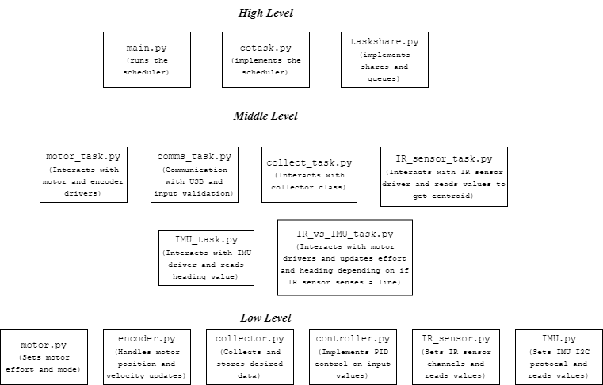

Software Overview
Romi employs cooperative multitasking to continuously switch between tasks and determine its state. At a high level, communication between MicroPython files can be visualized through the following hierarchical system:
Top-Level Scheduler: Manages overall task execution and ensures smooth task switching.
Mid-Level Task Modules: Each module represents a specific task, such as sensor reading, motor control, or navigation.
Low-Level Classes: Contain necessary drivers or classes related to handling data.

Class Diagram
Low-level classes can be best visualized by class diagrams that provide information on class methods, attributes, and relationships. This visualization is critical in the development of our Romi, as mid-level tasks create instances of these classes and call methods used to gather data.

Task Diagram
Inter-module communication occurs using shared variables or message queues to exchange data and coordinate actions. State determination is managed by the scheduler, with task modules collaborating to determine Romi’s current state and make decisions based on sensor inputs and task priorities. This structure ensures efficient task management and coordination, allowing Romi to perform complex actions reliably.
Periods and priorities for each task are selected based on the criticality of the task for Romi’s operation. For example, the motor task has the highest priority and shortest period to ensure it is run and updated according to the necessary effort shares pushed by controllers.